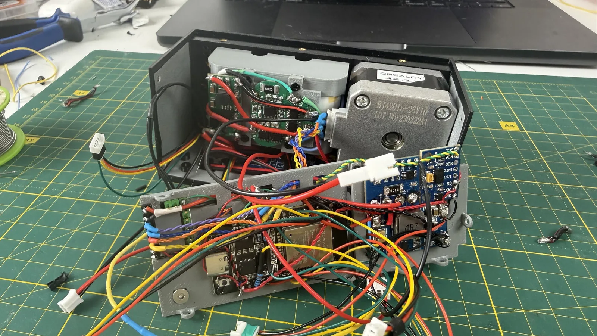
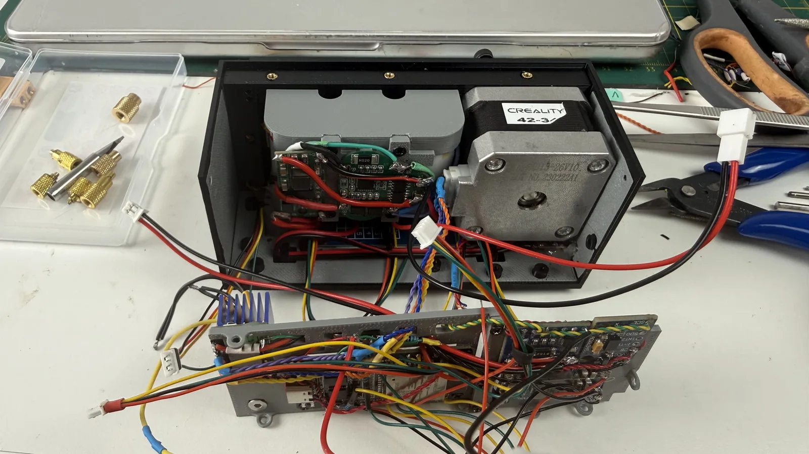
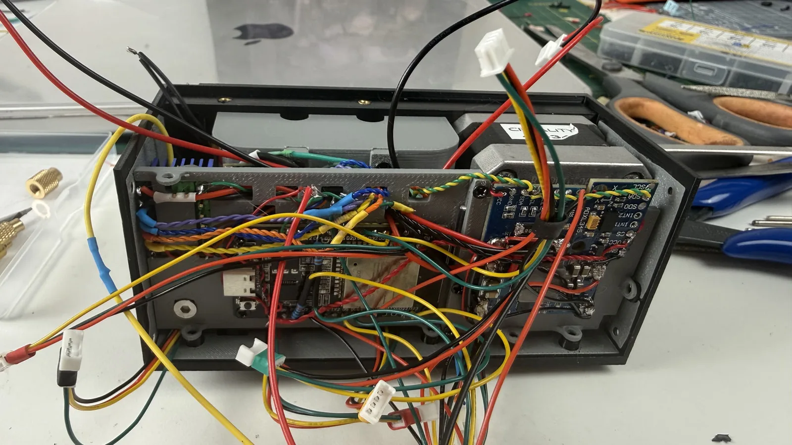
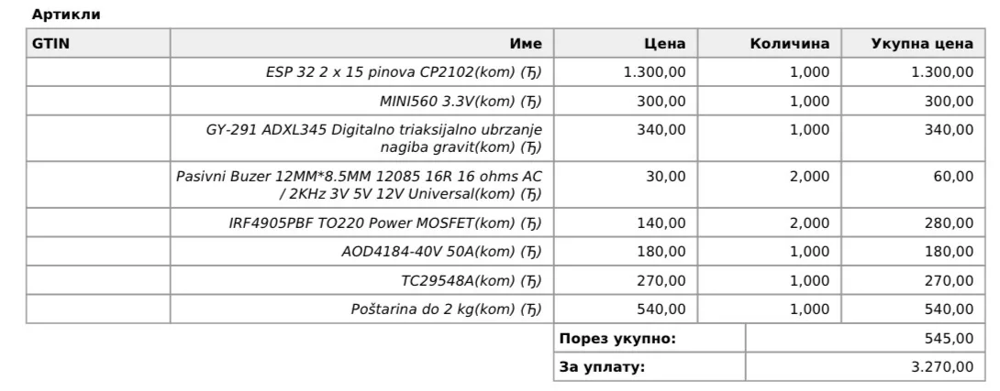

← все заметки
19.08.2026#слайдер #электроника
Проект слайдера близился к завершению. Мне казалось, что осталось только закрепить панель с электроникой и подключить транзистор, который управляет нагрузкой в схеме — размыкает землю между основной электроникой слайдера и источником питания.
Но не тут-то было, и слайдер приказал долго жить. Я пожёг практически всю электронику.
До конца я так и не понял, в чём была причина, но самый вероятный кандидат — один из разъёмов, единственный, который не был закрыт термоусадкой. Скорее всего, там произошло замыкание, и высокое напряжение попало на шину 3,3 В.
Точно умерли ESP32-WROOM и акселерометр. Пока что это всё, что удалось определить. Мне повезло, что в этот момент не был подключён экран, поэтому он остался целым. INA226 вроде бы тоже уцелел, но я, скорее всего, заменю его от греха подальше.
Из приятного — выжил драйвер мотора, так что его хотя бы не придётся вытаскивать. Ну а всё остальное — под замену.
Также, скорее всего, уцелел преобразователь, но на него я тоже немного косо смотрю и думаю, не поменять ли его заодно. Скорее всего, у него есть защита от обратного напряжения.
К сожалению, точно такой же платы ESP32 я не нашёл. Но, если я правильно понял маркировку, нашлась чуть более старая ревизия той же платы, и вроде бы она должна подойти по посадочным местам и количеству пинов. Так что жду её со дня на день и после этого смогу продолжить работу.
Также, чтобы уменьшить количество проводов и снизить вероятность что-нибудь снова сломать своими кривыми руками, я заказал готовую платку ключа на полевом транзисторе. Так не придётся городить всё на отдельном транзисторе, и схема станет ещё немного компактнее.
Вот общий скрин заказа:

Но не тут-то было, и слайдер приказал долго жить. Я пожёг практически всю электронику.
До конца я так и не понял, в чём была причина, но самый вероятный кандидат — один из разъёмов, единственный, который не был закрыт термоусадкой. Скорее всего, там произошло замыкание, и высокое напряжение попало на шину 3,3 В.

Точно умерли ESP32-WROOM и акселерометр. Пока что это всё, что удалось определить. Мне повезло, что в этот момент не был подключён экран, поэтому он остался целым. INA226 вроде бы тоже уцелел, но я, скорее всего, заменю его от греха подальше.

Из приятного — выжил драйвер мотора, так что его хотя бы не придётся вытаскивать. Ну а всё остальное — под замену.
Также, скорее всего, уцелел преобразователь, но на него я тоже немного косо смотрю и думаю, не поменять ли его заодно. Скорее всего, у него есть защита от обратного напряжения.
К сожалению, точно такой же платы ESP32 я не нашёл. Но, если я правильно понял маркировку, нашлась чуть более старая ревизия той же платы, и вроде бы она должна подойти по посадочным местам и количеству пинов. Так что жду её со дня на день и после этого смогу продолжить работу.
Также, чтобы уменьшить количество проводов и снизить вероятность что-нибудь снова сломать своими кривыми руками, я заказал готовую платку ключа на полевом транзисторе. Так не придётся городить всё на отдельном транзисторе, и схема станет ещё немного компактнее.
Вот общий скрин заказа:

Комментарии